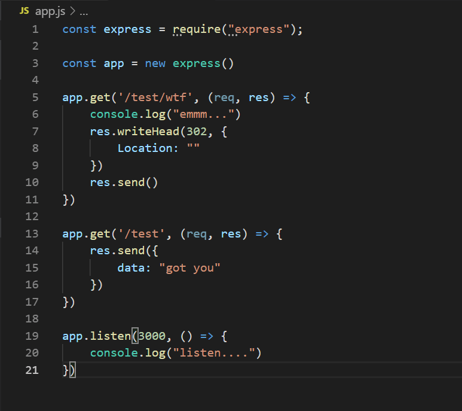
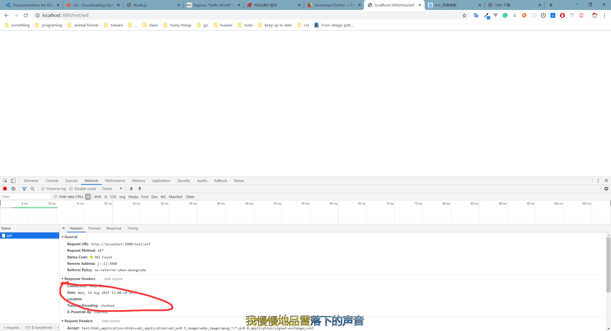
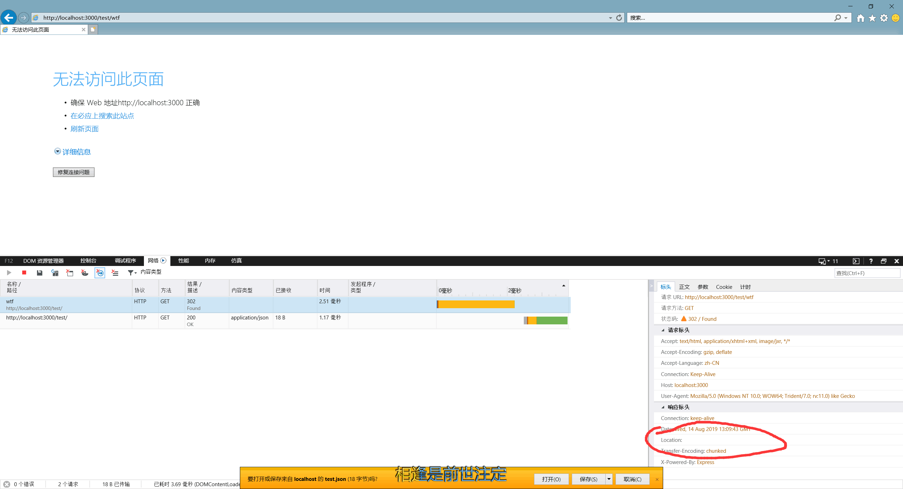
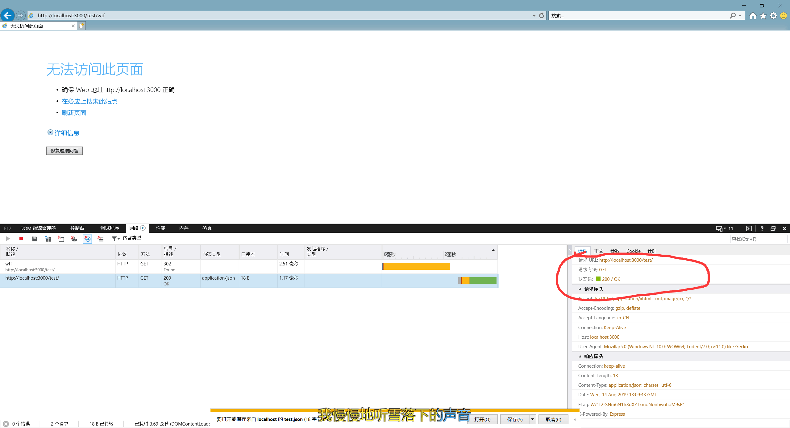
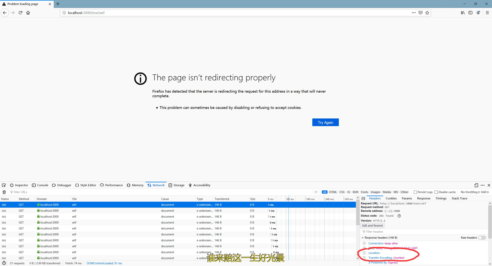

记一次 http 302的坑
今天帮同事定位一个302重定向的问题，结果发现是由于 http302在各个不同浏览器中的行为差异导致的，在这里记录一下。
现象：chrome登录页中收到一个http302的响应但是并没有重定向到新的链接，然鹅在IE中页面显示正常。
通过devTools和wireshark抓包发现是因为http302响应头中没有包含Location字段，而IE中的特殊行为又导致显示不一样。
下面的代码起一个简单的http server，监听3000端口，有/test和/test/wtf两个路由：

收到请求后，设置http响应码为302，把响应头里的Location字段设置为空，分别通过IE、Firefox、Chrome发送请求，收到响应后，三个浏览器的表现如下：
chrome

chrome收到不带合法跳转链接的302响应后，停留在空白页，不做其他操作。
Firefox

firefox收到响应后，又重复请求了几次相同的路由，当然结果也不会变，最后在页面显示 The page isn’t redirecting properly
IE


IE收到带有空Location字段的302http响应后，自作主张地又发一次请求，请求地址跟之前一样，但是路由变成了上级路由，比如这里从/test/wtf变为/test
所以，同事的界面在浏览器显示正常的原因就在这里，因为正常的跳转路由是/rb，正好是登录界面/rb/login的上级…误打误撞，对上了
说到这，说到上级路由，自然地想到，如果前一次的请求就是根路由呢？我改了下代码，用IE重新发了次请求，IE果然又整了幺蛾子。

IE又往相同的地址发了121次请求…醉了，试了很多次，都是121次…
以上，IE老是整些有的没有。
个人推特，嘿嘿嘿
对于http 302状态码，响应头里不带location字段的时候，IE11的处理真是绝了，最新的chrome和firefox都是不跳转，IE非得请求一下上一级路径 #给IE跪了https://t.co/IxlLUcdtaC
— hsping (@hsping1995) August 14, 2019